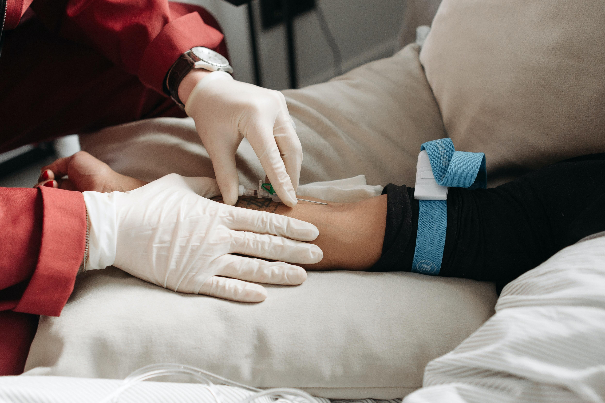

When should I rush to the hospital

Do not rush to the ER as soon as you are tested positive. Many people show mild symptoms for which one do not have to rush to the hospital. The symptoms are acute in some cases and with a week of quarantine
or the isolation you can be tested negative and be back to your normal routine. But if one shows the following signs then we recommend to get medical help
- Trouble breathing
- Persistent pain or pressure in the chest
- New confusion
- Inability to wake or stay awake
- Pale, gray, or blue-colored skin, lips, or nail beds, depending on skin tone
Remember, most places are making the vaccine mandatory now
Better to be safe than sorry
Covid vaccine is available through out the nation. Along with the parternship of governmental and non-governmental organization
the vaccination are made available for the people. All you need is your id card.
Where can i get vaccinated?
Vaccince infomation is available in the cdc website. Vaccines are now available in walgreen,cvs or any other stores near your.
You can also get the booster shots while you are there.